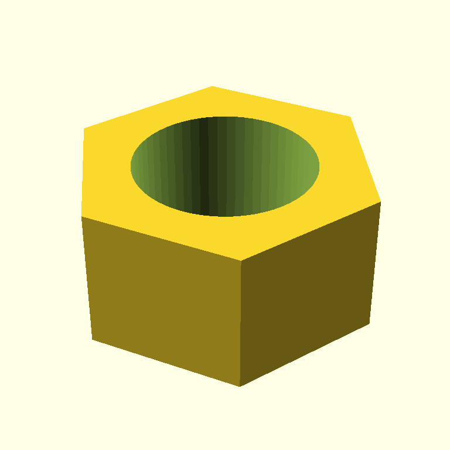

§ Icebreaker
scadia
Drive OpenSCAD with Claude.
A bounded design loop with vision feedback. Two sensors, one controller, no nonsense.

"a hexagonal nut, M10"
The loop
The critic does not decide when we are done. The controller decides whether another iteration is worth spending. The critic is one input.
The controller
Roughly thirty lines of Python. It reasons over both sensor outputs and stops the loop when there is no concrete reason to spend another iteration. The critic, in this design, is a sensor — not a judge.
# The interesting question is not "do we trust the critic?" — it's
# "is there evidence another iteration would improve the model?"
#
# We continue only when there is a concrete reason to spend another
# iteration. We stop when the critic has nothing actionable left to
# suggest, when quality is acceptable with no blocking issues, when
# we plateau, or when we run out of budget.
def should_continue(iterations: list[Iteration], max_iterations: int) -> bool:
if len(iterations) >= max_iterations:
return False
last = iterations[-1]
critique = last.critique
# Critic explicitly has no concrete change to suggest.
if critique.suggested_next_action is None:
return False
if critique.done:
return False
# Acceptable score and no blocking issues — even if the critic is still
# offering nits, they don't justify spending another full iteration.
if critique.score >= 8 and not critique.blocking_issues:
return False
# Let the first couple of iterations breathe before plateau-checking —
# early scores are noisy.
if len(iterations) < 3:
return True
prev = iterations[-2].critique
# Quality is not improving.
if critique.score <= prev.score:
return False
# Stuck: the same blocking issue surfaced two iterations in a row.
if set(critique.blocking_issues) & set(prev.blocking_issues):
return False
return TrueFrom src/scadia/agent.py
Quickstart
$ git clone https://github.com/jmcpheron/pycon2026
$ cd pycon2026 && uv sync
$ cp .env.example .env # add ANTHROPIC_API_KEY
$ uv run scadia "a hexagonal nut, M10" --iterations 3
Every iteration's .scad, .png, validation report, and critique
land in output/run-<timestamp>/. The manifest.json records the
loop's stop reason — useful for the demo reveal.
Showcase
The models/
directory holds checked-in OpenSCAD source. On every push, a GitHub Actions workflow
compiles each .scad to a binary .stl and commits the file back —
printable geometry, straight from the repo, no local install required.
Drop a .scad file in, push, and grab the corresponding .stl from
the next commit.